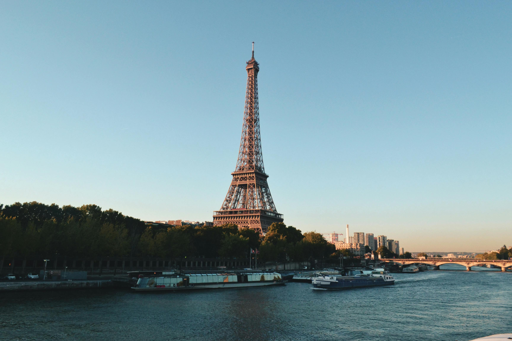

Best Travel Tips
- Best time to visit: Spring (April to June) and Fall (September to November) offer mild weather and fewer tourists.
- Learn basic French phrases: Knowing some French enhances your experience and interactions.
- Public Transport: Use the metro and train services for efficient travel. Consider getting a Navigo pass for unlimited travel in Paris.
- Dining Etiquette: Familiarize yourself with French dining customs.
- Local Currency: The Euro (€) is the official currency, so plan your budget accordingly.
Best Cuisines and Dining Recommendations
- Coq au Vin: Chicken braised with wine, mushrooms, and lardons.
- Baguettes: The quintessential French bread, crispy on the outside and soft inside.
- Cheese: Over 400 types, including Camembert and Brie.
- Crêpes: Thin pancakes enjoyed sweet or savory.
- Escargot: Snails cooked with garlic butter.
Best Accommodation Options

- Luxury Hotels: Stay at famous hotels like Le Meurice in Paris.
- Boutique Hotels: Unique accommodations in local neighborhoods.
- Budget Hostels: Affordable options in major cities.
- Vacation Rentals: Explore Airbnb options for a local experience.
- Château Stays: Experience luxury in historic châteaux.
Best Local Culture and Traditions
- Art: Famous artists like Monet and Degas.
- Literature: Renowned authors such as Victor Hugo.
- Cinema: Home of the Cannes Film Festival.
- Fashion: Paris is the fashion capital of the world.
- Festivals: Experience vibrant local festivals throughout the year.
Best Top Tourist Attractions

- Eiffel Tower: Iconic symbol of France.
- Louvre Museum: Home to the Mona Lisa.
- Palace of Versailles: Grandiose former royal residence.
- Mont Saint-Michel: Stunning island commune with a Gothic abbey.
- Notre-Dame Cathedral: A masterpiece of Gothic architecture.
Best Transportation Guides

- Metro: Extensive metro system in Paris.
- Trains: TGV connects major cities quickly.
- Buses: Local buses provide good coverage.
- Car Rentals: Great for exploring the countryside.
- Bicycles: Bike-sharing programs available in many cities.
Best Outdoor Activities and Adventure

- Skiing in the Alps: Popular destinations include Chamonix.
- Hiking: Scenic trails in national parks like Vanoise.
- Wine Tours: Explore vineyards in Bordeaux and Burgundy.
- Cycling: Enjoy picturesque routes along the Loire River.
- Water Sports: Kayaking and sailing along the Mediterranean coast.
Best Weather and Time to Visit
- Spring: Mild temperatures and blooming flowers (April to June).
- Summer: Warm and lively atmosphere (July to August).
- Fall: Colorful foliage and harvest festivals (September to November).
- Winter: Snowy landscapes and holiday markets (December to February).
- Regional Variations: Weather can vary significantly by region; check local forecasts.